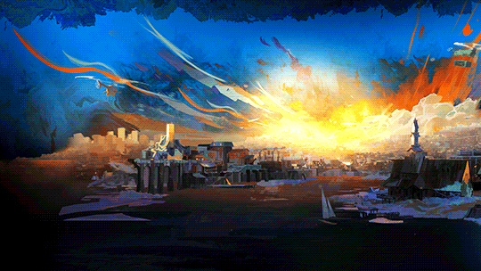

Main Content Heading
💰 The controversy surrounding the ownership of Disco Elysium highlights the importance of contracts and legal agreements in creative industries.
🎲 Disco Elysium was originally a tabletop RPG created by Robert Kurvitz and his friends in Estonia.
🎮 The team behind Disco Elysium had no game development experience and worked for years in a derelict building, yet still managed to create an amazing game that fulfilled their original vision.
🤯 The story of how Disco Elysium was stolen from its creators involves "a lot of fraud and greed."
💰 The scheme used to obtain ownership of Disco Elysium without spending a penny was corrupt and complex, involving taking money from ZA/UM to buy ZA/UM.
💰 The new owners of ZA/UM demoted the original owners and ousted them from the company in order to have full control and sell it to larger publishers, showing a lack of concern for the longevity of the studio.
💰 The original creators of Disco Elysium are still fighting for wrongful dismissal and claiming that majority ownership of ZA/UM was acquired through fraud, despite the money being repaid to the studio.